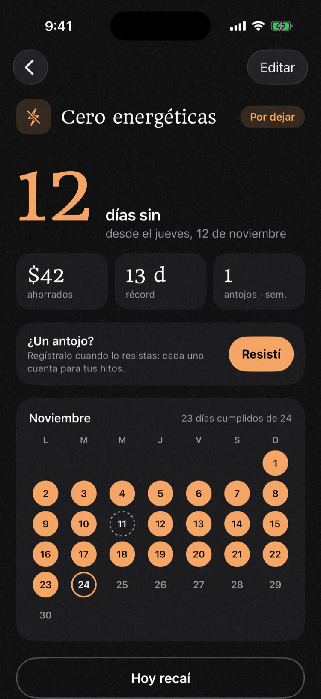
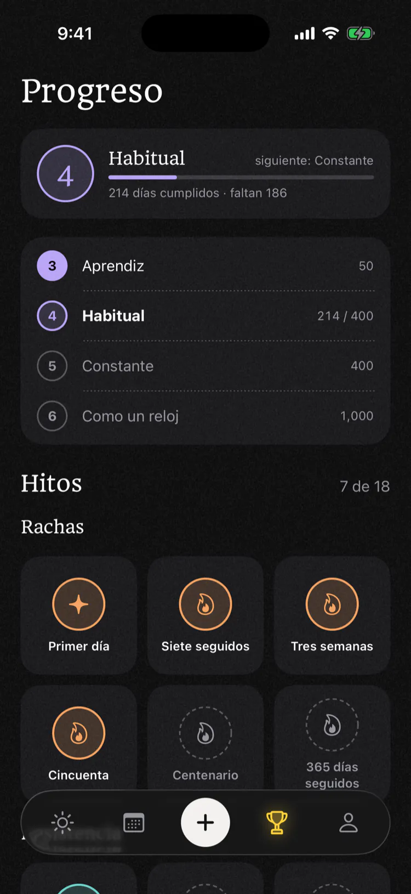
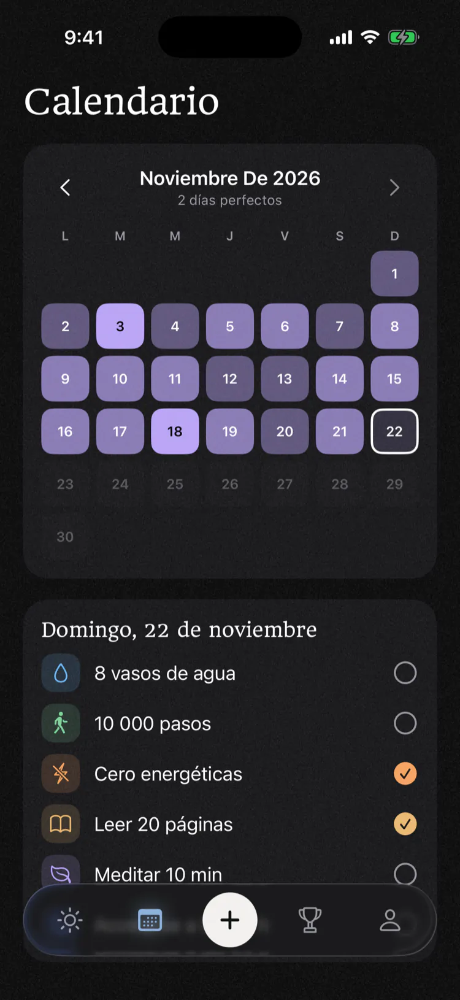

Dejar de vapear, contando lo que ganas
Última actualización: 23 de noviembre de 2026
Crea “Sin vapear” como hábito por dejar, y Coutume cuenta cada día sin vapear, el dinero que ahorras y los impulsos que superas. Gratis, privada, en iPhone.

Nada que registrar en un buen día
Un hábito por dejar se da por cumplido. No marcas nada cuando no vapeaste; solo registras el día que recaes. Coutume cuenta por ti.
Mira cómo crecen los días y el ahorro
Tus días sin vapear, el dinero que no gastaste y los impulsos que resististe esta semana, uno al lado del otro en la página del hábito.
Cada día cumplido sigue contando
Una recaída reinicia la cuenta de días sin, pero nunca te quita tu nivel ni tus logros. Quince niveles y dieciocho logros marcan el camino, un día cumplido tras otro.

Mira tu mes
El calendario muestra cada día del mes, más brillante cuantos más hábitos cumpliste: una forma tranquila de ver todo lo que has avanzado.

Coutume es una app de hábitos, no una app médica ni un programa para dejar de fumar. Para recibir ayuda para dejar de vapear, habla con un médico, un farmacéutico o una línea de ayuda local para dejar de fumar.
Coutume llega pronto a la App Store, para iPhone: gratis, sin cuenta, sin anuncios y sin suscripción.
Guías relacionadas
- Contador de días sin
Un contador de días sin para todo lo que quieras dejar
- Dejar las bebidas energéticas
Cuenta tus días sin bebidas energéticas y el dinero que ahorras
- Cuánto tarda un hábito
Lo que dice la investigación sobre el mito de los 21 días, y por qué un día perdido no importa
- Ideas de hábitos
40 ideas de buenos hábitos por crear y malos por dejar
Preguntas
Consulta las preguntas frecuentes o visita el soporte.